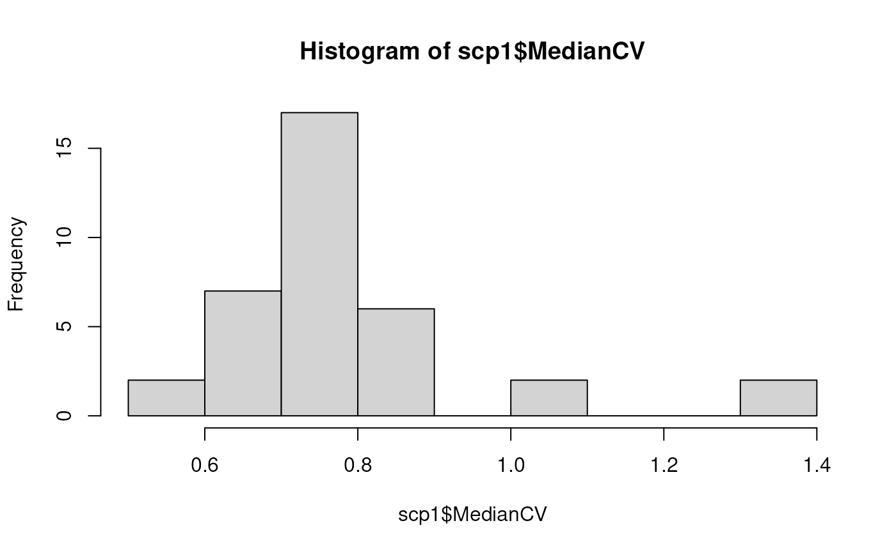

Compute the median coefficient of variation (CV) per cell
Source:R/compute_metrics.R
medianCVperCell.RdThe function computes for each cell the median CV and stores them
accordingly in the colData of the QFeatures object. The CVs in
each cell are computed from a group of features. The grouping is
defined by a variable in the rowData. The function can be
applied to one or more assays, as long as the samples (column
names) are not duplicated. Also, the user can supply a minimal
number of observations required to compute a CV to avoid that CVs
computed on too few observations influence the distribution within
a cell. The quantification matrix can be optionally normalized
before computing the CVs. Multiple normalizations are possible.
Usage
medianCVperCell(
object,
i,
groupBy,
nobs = 5,
na.rm = TRUE,
colDataName = "MedianCV",
norm = "none",
...
)Arguments
- object
A
QFeaturesobject- i
A
numeric()orcharacter()vector indicating from which assays therowDatashould be taken.- groupBy
A
character(1)indicating the variable name in therowDatathat contains the feature grouping.- nobs
An
integer(1)indicating how many observations (features) should at least be considered for computing the CV. Since no CV can be computed for less than 2 observations,nobsshould at least be 2.- na.rm
A
logical(1)indicating whether missing data should be removed before computation.- colDataName
A
character(1)giving the name of the new variable in thecolDatawhere the computed CVs will be stored. The name cannot already exist in thecolData.- norm
A
character()of normalization methods that will be sequentially applied to each feature (row) in each assay. Available methods and additional information about normalization can be found in MsCoreUtils::normalizeMethods. You can also specifynorm = "SCoPE2"to reproduce the normalization performed before computing the CVs as suggested by Specht et al.norm = "none"will not normalize the data (default)- ...
Additional arguments that are passed to the normalization method.
Details
A new column is added to the colData of the object. The samples
(columns) that are not present in the selection i will get
assigned an NA.
References
Specht, Harrison, Edward Emmott, Aleksandra A. Petelski, R. Gray Huffman, David H. Perlman, Marco Serra, Peter Kharchenko, Antonius Koller, and Nikolai Slavov. 2021. “Single-Cell Proteomic and Transcriptomic Analysis of Macrophage Heterogeneity Using SCoPE2.” Genome Biology 22 (1): 50.
Examples
data("scp1")
scp1 <- filterFeatures(scp1, ~ !is.na(Proteins))
#> 'Proteins' found in 4 out of 5 assay(s).
#> No filter applied to the following assay(s) because one or more
#> filtering variables are missing in the rowData: proteins. You can
#> control whether to remove or keep the features using the 'keep'
#> argument (see '?filterFeature').
scp1 <- medianCVperCell(scp1,
i = 1:3,
groupBy = "Proteins",
nobs = 5,
na.rm = TRUE,
colDataName = "MedianCV",
norm = "div.median")
#> Warning: The median CV could not be computed for one or more samples. You may want to try a smaller value for 'nobs'.
## Check results
hist(scp1$MedianCV)
